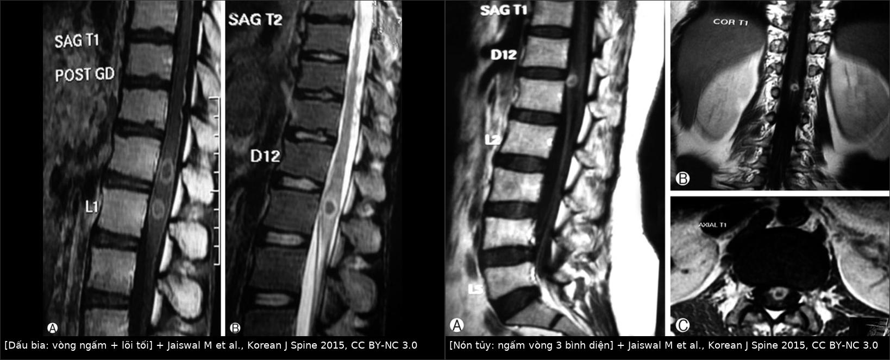
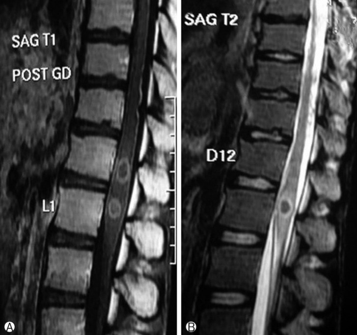
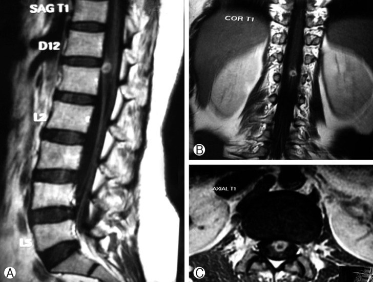

250 — Lao nội tủy & lao màng tủy: dấu bia / Spinal intramedullary & leptomeningeal tuberculosis
Tags: pattern:khang-ngam-vong pattern:viem-tuy vung:tuy-song protocol:MRI-tuy-co-gadolinium protocol:MRI-nao-tuong-phan
Mức chắc chắn (certainty): tổng hợp y văn (literature synthesis) — số liệu chính từ loạt 11 ca lao nội tủy (spinal intramedullary tuberculoma, SIMT) trong 27 năm tại một trung tâm Ấn Độ (PMC4398828, Korean J Spine 2015) và ca trẻ có lao nội tủy + lao não đồng thời (PMC6798273, J Pediatr Neurosci 2019). Hai ca trong quiz là ca nguyên văn, giữ đúng vị trí – dấu hiệu – cách xử trí của bài gốc.
Bài này nối tiếp 243 – Sán máng thần kinh (cùng mẫu hình "tăng T2 nội tủy + ngấm nốt/đường", nhưng điều trị hoàn toàn khác: praziquantel so với RIPE dài ngày) và 214 – Nhiễm trùng hệ thần kinh trung ương. Điểm chốt: lao nội tủy chữa khỏi bằng thuốc, mổ chỉ để giải ép hoặc khi chẩn đoán không rõ — nghĩ tới lao trước khi cắt tủy là quyết định lớn nhất của bài này.
1. Tổng quan — vì sao lao cho ra "dấu bia" và vì sao T2 lại TỐI
- Bệnh học: Mycobacterium tuberculosis lan tới tủy theo đường máu hoặc đường dịch não tủy (DNT); tại tủy hình thành u hạt lao (tuberculoma) gồm hoại tử bã đậu (caseous necrosis) ở trung tâm, bao quanh là u hạt tế bào biểu mô + tế bào khổng lồ Langerhans, ngoài cùng là phù và viêm mạch. Lao màng tủy (leptomeningeal TB) là biến thể lan theo khoang dưới nhện, thường kèm lao màng não.
- TẠI SAO T2 tối — không phải "tăng tín hiệu như mọi viêm": trung tâm bã đậu đặc, giàu tế bào (macrophage) và chứa gốc tự do thuận từ (paramagnetic free radicals) do đại thực bào sinh ra → rút ngắn T2 (T2 shortening) → khối tối/đẳng tín hiệu trên T2, khác hẳn phù quanh (sáng). Khi ổ bã đậu hóa lỏng nhiều, khối có thể sáng trên T2 — nên T2 sáng không loại trừ lao.
- TẠI SAO ngấm vòng (ring enhancement) và "dấu bia" (target sign): mạch máu chỉ còn ở viền u hạt nơi hàng rào máu–tủy bị phá vỡ → ngấm thuốc vòng; trung tâm bã đậu không có mạch → không ngấm. Trên T1 sau gadolinium: vòng sáng + lõi tối; trên T2: vòng tối + lõi tối/sáng → nhìn như bia bắn.
- Ngưỡng định lượng nằm lòng (từ loạt 11 ca và y văn):
- Tần suất: SIMT chỉ 2/100.000 ca lao và 0,2% ca lao thần kinh trung ương; tỉ lệ nội tủy : nội sọ ≈ 1 : 42.
- Vị trí: tủy ngực 91% (10/11) trong loạt; hay gặp vùng nón tủy–tủy ngực giữa; chỉ 1 ca vùng cổ.
- Dấu bia: có ở 7/9 ca được chụp MRI (78%); giãn tủy lan tỏa tại chỗ có ở 9/9.
- Lao phổi kèm theo: 5/11 (45%) — tức hơn nửa không có lao phổi, đừng chờ X-quang ngực dương mới nghĩ tới lao.
- Lao nội sọ đồng thời: 2/11 (18%), đều là ca nhiều ổ nội tủy → có nhiều ổ nội tủy thì bắt buộc MRI não.
- Vôi hóa: u hạt lao lành hóa vôi hóa ở ~23% ca; vôi hóa là dấu hiệu muộn, không dùng để chốt hoạt động.
- Điều trị trong loạt: HRZE + S + moxifloxacin 3 tháng (liều theo cân nặng: H 5, R 10, E 15, Z 25, S 15, Mfx 10 mg/kg/ngày) rồi HR kéo dài tới 21 tháng (tổng 24 tháng), kèm prednisolone 1 mg/kg/ngày giảm dần trong 6 tuần đầu.
- Kết cục: 8/11 mổ, 7/8 hết tổn thương trên MRI sau mổ; 3/11 điều trị nội khoa đơn thuần đều cải thiện; 1/8 rò DNT sau mổ (ngày 4), xử lý bằng acetazolamide + tư thế nằm sấp + băng ép.
2. Mẫu hình + chẩn đoán phân biệt theo vị trí (Gamut)
A. Tổn thương NỘI TỦY ngấm vòng (gamut chính của bài):
- Lao nội tủy (SIMT) — khối/đa khối, dấu bia, phù quanh, không phá hủy đốt sống–đĩa đệm, có thể kèm lao màng não/não.
- U nội tủy: ependymoma (trung tâm, bờ rõ, hay xuất huyết, ngấm đồng nhất hoặc vòng), astrocytoma (lệch tâm, bờ mờ, ngấm không đồng nhất), hemangioblastoma (nang + nốt ngấm mạnh ở thành, hay có mạch lớn).
- Áp-xe nội tủy (rất hiếm): sốt + đau + DWI hạn chế mạnh trong lõng, ngấm vòng dày.
- Sán máng tủy (bài 243): ngấm nốt–đường kiểu "cuống lá" quanh một đường sáng trung tâm, dịch tễ nước ngọt, eosinophil DNT chỉ 40–50%.
- NMOSD/viêm tủy cắt ngang: LETM ≥ 3 đốt, tổn thương trung tâm "H-sign", ngấm vòng hở (open ring) hoặc mảng, không có khối.
- Di căn nội tủy / lymphoma: hiếm, thường có tiền sử ung thư, ngấm đồng nhất, phù rộng.
B. Tổn thương MÀNG TỦY (lao màng tủy — leptomeningeal TB):
- Dày, ngấm thuốc màng tủy–màng nhện, đặc biệt mặt lưng tủy ngực, có thể dính màng nhện gây giãn tủy (syrinx) thứ phát hoặc chèn ép tủy.
- Gamut dày màng tủy: lao màng não/tủy, sarcoidosis, carcinomatosis màng não, nhiễm nấm (Cryptococcus), viêm màng não mủ, xuất huyết màng não cũ.
C. Câu hỏi lọc bắt buộc (3 câu):
- Có bối cảnh lao (tiếp xúc, lao phổi, lao hạch, IGRA/Xpert dương, môi trường dịch tễ) hoặc đang dùng thuốc ức chế miễn dịch/HIV?
- Tổn thương có phá đốt sống–đĩa đệm không? Có → nghĩ lao cột sống (Pott) trước, vì đường vào và cách xử trí khác.
- Có nhiều ổ nội tủy hoặc đau đầu/co giật? Có → MRI não có gadolinium ngay.
3. Bảng so sánh phân biệt (ma trận đối chiếu)
| Thực thể (entity) | Hình ảnh điển hình | Chốt vào (rule-in) | Chốt loại (rule-out) | Gợi ý xác nhận |
|---|---|---|---|---|
| Lao nội tủy (SIMT) | Khối nội tủy T2 tối/đẳng + vòng ngấm + lõi tối ("dấu bia"), phù quanh, giãn tủy tại chỗ, không phá xương | Dấu bia + bối cảnh lao ± lao phổi ± lao não, tổn thương giảm sau ATT | Phá hủy đốt–đĩa đệm → Pott; ngấm nốt rời rạc → sán máng | MRI tủy + não có Gd; Xpert MTB/RIF trên DNT/dịch; mô bệnh nếu mổ |
| Ependymoma | Khối trung tâm, bờ rõ, phình tủy khu trú, hay xuất huyết (viền hemosiderin), nang | Bờ rõ + xuất huyết + không giảm sau ATT | Giảm rõ sau 4–8 tuần ATT → không phải u | MRI; mô bệnh (chuẩn) |
| Astrocytoma tủy | Khối lệch tâm, bờ mờ, ngấm không đồng nhất, phù dài | Bờ mờ + lệch tâm + tiến triển dù ATT | Dấu bia điển hình + bối cảnh lao → lao | MRI; mô bệnh |
| Áp-xe nội tủy | Ngấm vòng dày, DWI hạn chế mạnh trong lõi, phù nhiều, sốt | Sốt + DWI lõi tối + bạch cầu tăng | Không hạn chế DWI + bối cảnh lao → lao | Cấy/mô bệnh; kháng sinh–dẫn lưu |
| Sán máng tủy | Ngấm nốt–đường kiểu cuống lá quanh đường sáng trung tâm, tủy ngực dưới/nón tủy | Dịch tễ nước ngọt + ELISA DNT dương | Dấu bia đơn khối + Xpert lao dương → lao | ELISA huyết thanh/DNT; đáp ứng praziquantel |
| NMOSD / viêm tủy cắt ngang | LETM ≥ 3 đốt, trung tâm "H-sign", ngấm mảng/vòng hở, không khối | AQP4/MOG dương + LETM + viêm dây thị | Khối có bờ + dấu bia → không phải | AQP4/MOG; MRI não |
| Lao cột sống (Pott) | Phá thân đốt + hẹp đĩa đệm + áp-xe cạnh sống, chèn ép tủy | Phá đốt–đĩa + áp-xe + vôi hóa | Tủy bình thường, tổn thương ngoài màng cứng → không phải nội tủy | CT xương + MRI; PCR lao |

Trái: T1 sau gadolinium cạnh T2 — hai vòng ngấm thuốc có lõi tối, nằm trong tủy vùng nón tủy (D12–L1), tủy giãn tại chỗ nhưng không phá đốt sống. Phải: cùng tổn thương nhìn trên 3 bình diện (sagittal/coronal/axial T1 sau tiêm) — ngấm vòng bờ rõ, kèm ngấm màng tủy nhẹ. Nguồn: Jaiswal M et al., Korean J Spine 2015, PMC4398828, Fig. 3 và Fig. 2, CC BY-NC 3.0; ảnh ghép letterbox.Dấu hiệu đọc chuẩn xác
- Dấu bia (target sign) = vòng ngấm + lõi không ngấm trên T1 sau tiêm, tương ứng vùng tủy tối/đẳng tín hiệu trên T2. Đây là dấu gợi ý mạnh nhưng không đặc hiệu tuyệt đối (u hoại tử, áp-xe, di căn hoại tử cũng có thể).
- Giãn tủy tại chỗ (cord expansion) có ở 9/9 ca có MRI — nhưng giãn tủy không phân biệt lao với u; điều phân biệt là bờ tổn thương + T2 tối + bối cảnh.
- Lao màng tủy: dày–ngấm màng tủy lan dọc nhiều đốt, có thể dính màng nhện → biến chứng giãn tủy thứ phát; đừng chỉ đọc "khối" mà bỏ qua màng tủy.
- Đa ổ nội tủy = tín hiệu báo động: trong loạt, cả 2 ca đa ổ đều có lao nội sọ đồng thời → chụp não.
4. Protocol chụp + xét nghiệm + điều trị
Protocol hình ảnh:
- MRI toàn bộ tủy sống có gadolinium: sagittal T1, T2, STIR, T1 sau tiêm, axial T2 + T1 sau tiêm qua ổ tổn thương; DWI/ADC khi nghi áp-xe (lõi hạn chế) hoặc phân biệt với u tế bào cao.
- MRI não có gadolinium khi: nhiều ổ nội tủy, đau đầu/co giật/rối loạn ý thức, hoặc chuẩn bị điều trị lao thần kinh trung ương (tìm lao màng não–não đồng thời).
- X-quang/CT ngực tìm lao phổi (chỉ 45% ca có); CT cột sống khi cần loại trừ Pott (phá đốt–đĩa).
- Chụp lại sau 4–8 tuần ATT (đánh giá đáp ứng) và 3–6 tháng; tổn thương nhỏ lại + hết ngấm là bằng chứng hồi cứu mạnh cho chẩn đoán.
Xét nghiệm:
- DNT: protein tăng, glucose giảm, tế bào lympho tăng — không đặc hiệu; Xpert MTB/RIF và cấy lao (độ nhạy DNT không cao, âm tính không loại trừ).
- IGRA/Mantoux chỉ nói đã nhiễm, không phân biệt lao hoạt động; HIV và ức chế miễn dịch là yếu tố nguy cơ.
Điều trị (ngưỡng và con số):
- Kháng lao có kiểm soát: phác đồ chuẩn 2HRZE/10HRE (WHO) cho lao thần kinh trung ương; nhiều trung tâm dùng 9–12 tháng; loạt ca này dùng 24 tháng (3 tháng 6 thuốc + 21 tháng HR) vì lo ngại kháng thuốc — chưa có thử nghiệm so sánh trực tiếp, nên bài này không biến 24 tháng thành chuẩn.
- Corticoid: prednisolone 1 mg/kg/ngày giảm dần 6 tuần trong loạt, nhằm giảm phù và nguy cơ viêm màng não lao sau mổ; dùng kèm kháng lao, không bao giờ đơn thuần.
- Chỉ định mổ (theo loạt): (1) không đáp ứng ATT, (2) chẩn đoán còn nghi u, (3) xấu thần kinh nhanh, (4) to ra nghịch lý có hiệu ứng choán chỗ sau khi bắt đầu ATT (ca 8). Mổ = cắt u qua đường vào sau, có vi phẫu, lấy toàn bộ khối có mặt phẳng rõ.
- Biến chứng sau mổ: rò DNT 1/8, phù tủy sau mổ 1/8 (hết sau 3 tháng), di chứng thần kinh tồn dư; nguy cơ viêm màng não lao sau mổ là lý do phải phủ kháng lao đầy đủ trước–trong–sau mổ.
flowchart TD
A[Liệt hai chân hoặc rối loạn cơ tròn bán cấp<br/>đau lưng và sốt nhẹ] --> B[MRI toàn bộ tủy có gadolinium]
B --> C{Khối nội tủy ngấm vòng<br/>có dấu bia?}
C -->|Không| D[Theo DDx: u nội tủy, NMOSD, sán máng, áp-xe]
C -->|Có| E[Hỏi bối cảnh lao, HIV, thuốc ức chế miễn dịch<br/>X-quang và CT ngực, IGRA]
E --> F[MRI não có gadolinium<br/>nếu nhiều ổ hoặc có triệu chứng não]
F --> G[Xét nghiệm DNT: protein, glucose, tế bào<br/>Xpert MTB/RIF và cấy lao]
G --> H{Bối cảnh lao hoặc Xpert dương?}
H -->|Có| I[Bắt đầu RIPE kèm corticoid<br/>theo dõi 4 đến 8 tuần]
H -->|Không rõ| J[Sinh thiết hoặc mổ lấy mô<br/>nếu chẩn đoán còn nghi ngờ]
I --> K{MRI kiểm tra: tổn thương nhỏ lại?}
K -->|Có| L[Tiếp tục kháng lao, theo dõi 3 đến 6 tháng]
K -->|Không hoặc xấu hơn| M[Xem lại chẩn đoán, cân nhắc mổ giải ép]
J --> M
5. Biến thể bình thường và cạm bẫy
- T2 tối bị đọc thành máu/melanin: u hạt lao tối trên T2 vì đặc tế bào + gốc tự do, không phải hemosiderin; đừng vội kết luận "xuất huyết tủy cũ".
- Dấu bia không độc quyền của lao: u hoại tử, áp-xe, di căn hoại tử đều có thể cho vòng ngấm + lõi tối → luôn cộng bối cảnh + DWI + đáp ứng điều trị.
- To ra sau khi bắt đầu ATT (paradoxical reaction/IRIS): ca 8 trong loạt to lên có hiệu ứng choán chỗ và phải mổ; nhưng đa số phản ứng nghịch lý tự giới hạn — chỉ mổ khi xấu thần kinh, không mổ chỉ vì ảnh to hơn.
- Không có lao phổi không loại trừ: 6/11 ca không có lao phổi; X-quang ngực bình thường không được dừng con đường chẩn đoán.
- Bỏ sót lao não: 2/11 ca có lao nội sọ đồng thời, đều thuộc nhóm đa ổ nội tủy → thiếu MRI não là bỏ sót ổ có thể gây động kinh/tăng áp lực nội sọ.
- Nhầm với Pott: nếu có phá đốt–đĩa đệm thì tổn thương tủy là chèn ép từ ngoài, không phải u nội tủy; điều trị và đường mổ khác.
- Đừng chờ mô bệnh nếu bối cảnh + hình ảnh phù hợp: trễ ATT = tủy đã tổn thương không hồi phục; ngược lại đừng mổ chỉ vì "nhìn giống u" khi chưa loại trừ lao.
- Vôi hóa (23%) là dấu muộn, không dùng để khẳng định "lao cũ không hoạt động".
- Sau mổ, rò DNT là biến chứng thật (1/8) — theo dõi vết mổ, tư thế, và không rút chỉ sớm.
6. Tự lượng giá — Blind Quiz
Ca 1 — Nam thanh niên, liệt hai chân tiến triển, sốt nhẹ 3 tháng, có ho khạc. MRI tủy vùng nón tủy:

- Câu hỏi: (1) Mô tả tổn thương và gọi tên dấu hiệu? (2) Vì sao lõi tổn thương tối trên cả T1 sau tiêm và T2? (3) Ba chẩn đoán phân biệt và xét nghiệm chốt hướng?
Bấm để hiện đáp án (findings + chẩn đoán)
- Dấu hiệu: hai vòng ngấm thuốc trong tủy vùng nón tủy–epiconus (D12–L1), lõi không ngấm, tủy giãn tại chỗ, không phá đốt sống → dấu bia (target sign).
- Vì sao lõi tối: trung tâm hoại tử bã đậu đặc, không mạch máu → không ngấm gadolinium; đặc tế bào + gốc tự do thuận từ → T2 tối.
- Phân biệt: u nội tủy (ependymoma/astrocytoma), áp-xe nội tủy, sán máng tủy; chốt hướng bằng bối cảnh lao + Xpert/cấy DNT + đáp ứng ATT; MRI não để tìm lao đồng thời.
- Ca gốc: bệnh nhân có lao phổi, được điều trị nội khoa (không mổ) và tổn thương giảm dần trên MRI theo dõi.
- Nguồn ảnh: Jaiswal M et al., Korean J Spine 2015, PMC4398828, Fig. 3, CC BY-NC 3.0 (nguyên bản).
Ca 2 — Bệnh nhân liệt hai chân, MRI tủy có tổn thương nón tủy; ảnh sagittal–coronal–axial sau tiêm:

- Câu hỏi: (1) Tổn thương nằm trong hay ngoài tủy? Dấu hiệu định vị? (2) Có gì ngoài khối? (3) Vì sao ca này vẫn có thể điều trị nội khoa?
Bấm để hiện đáp án
- Định vị: khối nằm trong tủy, mặt trước nón tủy, tủy giãn quanh khối → nội tủy (không phải ngoài màng cứng: không đẩy lệch túi màng cứng).
- Ngoài khối: ngấm màng tủy nhẹ (leptomeningeal enhancement) → gợi ý lao màng tủy kèm theo.
- Vì sao nội khoa được: bệnh nhân đã dùng ATT cho lao phổi 3–4 tháng, thần kinh không xấu thêm → theo dõi dưới ATT là lựa chọn hợp lý; mổ dành cho xấu nhanh, không đáp ứng, hoặc chẩn đoán không rõ.
- Nguồn ảnh: Jaiswal M et al., Korean J Spine 2015, PMC4398828, Fig. 2, CC BY-NC 3.0 (nguyên bản).
Phản biện (critique): bằng chứng là loạt ca hồi cứu 11 ca trong 27 năm, không có nhóm chứng; thời gian ATT 24 tháng trong bài gốc dài hơn khuyến cáo WHO 9–12 tháng cho lao thần kinh trung ương, và liều corticoid 6 tuần chưa được thử nghiệm ngẫu nhiên. Vì vậy các con số ở đây được ghi kèm nguồn, không nâng thành "khuyến cáo mạnh"; khi áp dụng phải theo phác đồ của đơn vị và kháng thuốc tại chỗ.
Bài liên quan chéo
- 200 – Tổng quan Hệ Thần kinh
- 243 – Sán máng thần kinh: tủy ngực dưới/nón tủy & thể não giả u
- 214 – Nhiễm trùng hệ thần kinh trung ương: sán lợn, lao, toxoplasma
- 222 – Viêm đốt sống–đĩa đệm & lao cột sống (Pott)
- 220 – Tiếp cận tổn thương ống sống theo 3 khoang
- 226 – Tủy mềm không do chấn thương: nhồi máu tủy, SDAVF, NMO
- 254 – Giãn tủy sau chấn thương tủy sống
Không dùng để chẩn đoán độc lập khi chưa có người hướng dẫn.